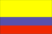
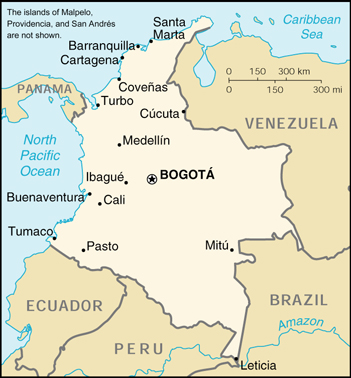

{kind=link}


| Colombia |  |
|
|
 | |
| Introduction |
Background: Colombia was one of the three countries that emerged from the collapse of Gran Colombia in 1830 (the others being Ecuador and Venezuela). A 40-year insurgent campaign to overthrow the Colombian Government escalated during the 1990s, undergirded in part by funds from the drug trade. Although the violence is deadly and large swaths of the countryside are under guerrilla influence, the movement lacks the military strength or popular support necessary to overthrow the government. While Bogota continues to try to negotiate a settlement, neighboring countries worry about the violence spilling over their borders.
| Geography |
Location: Northern South America, bordering the Caribbean Sea, between Panama and Venezuela, and bordering the North Pacific Ocean, between Ecuador and Panama
Geographic coordinates: 4 00 N, 72 00 W
Map references: South America, Central America and the Caribbean
Area:
total:
1,138,910 sq km
land:
1,038,700 sq km
water:
100,210 sq km
note:
includes Isla de Malpelo, Roncador Cay, Serrana Bank, and Serranilla Bank
Area - comparative: slightly less than three times the size of Montana
Land boundaries:
total:
6,004 km
border countries:
Brazil 1,643 km, Ecuador 590 km, Panama 225 km, Peru 1,496 km (est.), Venezuela 2,050 km
Coastline: 3,208 km (Caribbean Sea 1,760 km, North Pacific Ocean 1,448 km)
Maritime claims:
continental shelf:
200-m depth or to the depth of exploitation
exclusive economic zone:
200 nm
territorial sea:
12 nm
Climate: tropical along coast and eastern plains; cooler in highlands
Terrain: flat coastal lowlands, central highlands, high Andes Mountains, eastern lowland plains
Elevation extremes:
lowest point:
Pacific Ocean 0 m
highest point:
Nevado del Huila 5,750 m
Natural resources: petroleum, natural gas, coal, iron ore, nickel, gold, copper, emeralds, hydropower
Land use:
arable land:
4%
permanent crops:
1%
permanent pastures:
39%
forests and woodland:
48%
other:
8% (1993 est.)
Irrigated land: 5,300 sq km (1993 est.)
Natural hazards: highlands subject to volcanic eruptions; occasional earthquakes; periodic droughts
Environment - current issues: deforestation; soil damage from overuse of pesticides; air pollution, especially in Bogota, from vehicle emissions
Environment - international agreements:
party to:
Antarctic Treaty, Biodiversity, Climate Change, Desertification, Endangered Species, Hazardous Wastes, Marine Life Conservation, Nuclear Test Ban, Ozone Layer Protection, Ship Pollution, Tropical Timber 83, Tropical Timber 94, Wetlands
signed, but not ratified:
Antarctic-Environmental Protocol, Law of the Sea, Marine Dumping
Geography - note: only South American country with coastlines on both North Pacific Ocean and Caribbean Sea
| People |
Population: 39,685,655 (July 2000 est.)
Age structure:
0-14 years:
32% (male 6,463,195; female 6,310,723)
15-64 years:
63% (male 12,206,095; female 12,854,682)
65 years and over:
5% (male 832,986; female 1,017,974) (2000 est.)
Population growth rate: 1.68% (2000 est.)
Birth rate: 22.85 births/1,000 population (2000 est.)
Death rate: 5.73 deaths/1,000 population (2000 est.)
Net migration rate: -0.33 migrant(s)/1,000 population (2000 est.)
Sex ratio:
at birth:
1.03 male(s)/female
under 15 years:
1.02 male(s)/female
15-64 years:
0.95 male(s)/female
65 years and over:
0.82 male(s)/female
total population:
0.97 male(s)/female (2000 est.)
Infant mortality rate: 24.7 deaths/1,000 live births (2000 est.)
Life expectancy at birth:
total population:
70.28 years
male:
66.43 years
female:
74.27 years (2000 est.)
Total fertility rate: 2.69 children born/woman (2000 est.)
Nationality:
noun:
Colombian(s)
adjective:
Colombian
Ethnic groups: mestizo 58%, white 20%, mulatto 14%, black 4%, mixed black-Amerindian 3%, Amerindian 1%
Religions: Roman Catholic 90%
Languages: Spanish
Literacy:
definition:
age 15 and over can read and write
total population:
91.3%
male:
91.2%
female:
91.4% (1995 est.)
| Government |
Country name:
conventional long form:
Republic of Colombia
conventional short form:
Colombia
local long form:
Republica de Colombia
local short form:
Colombia
Data code: CO
Government type: republic; executive branch dominates government structure
Capital: Bogota
Administrative divisions: 32 departments (departamentos, singular - departamento) and 1 capital district* (distrito capital); Amazonas, Antioquia, Arauca, Atlantico, Bolivar, Boyaca, Caldas, Caqueta, Casanare, Cauca, Cesar, Choco, Cordoba, Cundinamarca, Guainia, Guaviare, Huila, La Guajira, Magdalena, Meta, Narino, Norte de Santander, Putumayo, Quindio, Risaralda, San Andres y Providencia, Distrito Capital de Santa fe de Bogota*, Santander, Sucre, Tolima, Valle del Cauca, Vaupes, Vichada
Independence: 20 July 1810 (from Spain)
National holiday: Independence Day, 20 July (1810)
Constitution: 5 July 1991
Legal system: based on Spanish law; a new criminal code modeled after US procedures was enacted in 1992-93; judicial review of executive and legislative acts; accepts compulsory ICJ jurisdiction, with reservations
Suffrage: 18 years of age; universal
Executive branch:
chief of state:
President Andres PASTRANA (since 7 August 1998); Vice President Gustavo BELL Lemus (since 7 August 1998); note - the president is both the chief of state and head of government
head of government:
President Andres PASTRANA (since 7 August 1998); Vice President Gustavo BELL Lemus (since 7 August 1998); note - the president is both the chief of state and head of government
cabinet:
Cabinet
elections:
president elected by popular vote for a four-year term; election last held 31 May 1998 (next to be held NA May 2002); vice president elected by popular vote for a four-year term in a new procedure that replaces the traditional designation of vice presidents by newly elected presidents; election last held 31 May 1998 (next to be held NA May 2002)
election results:
no candidate received more than 50% of the total vote, therefore, a run-off election to select a president from the two leading candidates was held 21 June 1998; Andres PASTRANA elected president; percent of vote - 50.3%; Gustavo BELL elected vice president; percent of vote - 50.3%
Legislative branch:
Bicameral Congress or Congreso consists of the Senate or Senado (102 seats; members are elected by popular vote to serve four-year terms) and the House of Representatives or Camara de Representantes (163 seats; members are elected by popular vote to serve four-year terms)
elections:
Senate - last held NA March 1998 (next to be held NA March 2002); House of Representatives - last held NA March 1998 (next to be held NA March 2002)
election results:
Senate - percent of vote by party - PL 50%, PSC 24%, smaller parties (many aligned with conservatives) 26%; seats by party - PL 58, PSC 28, smaller parties 16; House of Representatives - percent of vote by party - PL 52%, PSC 17%, other 31%; seats by party - PL 98, PSC 52, indigenous parties 2, others 11
Judicial branch: Supreme Court of Justice or Corte Suprema de Justical, highest court of criminal law, judges are selected from the nominees of the Higher Council of Justice for eight-year terms; Council of State, highest court of administrative law, judges are selected from the nominees of the Higher Council of Justice for eight-year terms; Constitutional Court, guards integrity and supremacy of the constitution, rules on constitutionality of laws, amendments to the constitution, and international treaties
Political parties and leaders: Democratic Alliance-April 19 Movement or AD/M-19 is a coalition of small leftist parties and dissident liberals and conservatives [Carlos Franco ECHAVARRIA, Antonio NAVARRO Wolff, Otty PATINO, Carlos Alonso LUCIO]; Liberal Party or PL [Jose Fernando BAUTISTA]; New Democratic Force or NDF [leader NA]; Patriotic Union or UP is a legal political party formed by Revolutionary Armed Forces of Colombia or FARC and Colombian Communist Party or PCC [Aida ABELLA]; Social Conservative Party or PSC [Dr. Eugenio MERLANO de la Ossa]
Political pressure groups and leaders: two largest insurgent groups active in Colombia - National Liberation Army or ELN; and Revolutionary Armed Forces of Colombia or FARC
International organization participation: BCIE, CAN, Caricom (observer), CCC, CDB, ECLAC, FAO, G- 3, G-11, G-24, G-77, IADB, IAEA, IBRD, ICAO, ICC, ICFTU, ICRM, IDA, IFAD, IFC, IFRCS, IHO, ILO, IMF, IMO, Inmarsat, Intelsat, Interpol, IOC, IOM, ISO, ITU, LAES, LAIA, NAM, OAS, OPANAL, OPCW, PCA, RG, UN, UNCTAD, UNESCO, UNHCR, UNIDO, UNU, UPU, WCL, WFTU, WHO, WIPO, WMO, WToO, WTrO
Diplomatic representation in the US:
chief of mission:
Ambassador Luis Alberto MORENO Mejia
chancery:
2118 Leroy Place NW, Washington, DC 20008
telephone:
[1] (202) 387-8338
FAX:
[1] (202) 232-8643
consulate(s) general:
Boston, Chicago, Houston, Los Angeles, Miami, New Orleans, New York, San Francisco, San Juan (Puerto Rico), and Washington, DC
consulate(s):
Atlanta
Diplomatic representation from the US:
chief of mission:
Ambassador Curtis Warren KAMMAN
embassy:
Calle 22D-BIS, numbers 47-51, Apartado Aereo 3831
mailing address:
APO AA 34038
telephone:
[57] (1) 315-0811
FAX:
[57] (1) 315-2197
Flag description: three horizontal bands of yellow (top, double-width), blue, and red; similar to the flag of Ecuador, which is longer and bears the Ecuadorian coat of arms superimposed in the center
| Economy |
Economy - overview: Colombia is poised for moderate growth in the next several years, marking an end to the severe 1999 recession when GDP fell by about 5%. President PASTRANA's well-respected economic team is taking steps to keep the recovery on track, such as lowering interest rates and shoring up the financial system. In its loan agreement with the IMF, the administration has pledged to take additional steps to restore growth, reduce inflation, and improve the public sector's fiscal health. Many challenges to sustainable growth remain, however. Unemployment reached a record 20% in 1999 and may remain high, contributing to the extreme inequality in income distribution. Colombia's leading exports, oil and coffee, face an uncertain future: new exploration is needed to offset a pending decline in oil production, and the coffee harvest has dropped off because of aging plantations and natural disasters. The lack of public security is a key concern for investors, making progress in the government's peace negotiations with insurgent groups an important driver of economic performance. Colombia is looking for international financial assistance to boost economic recovery and peace prospects.
GDP: purchasing power parity - $245.1 billion (1999 est.)
GDP - real growth rate: -5% (1999 est.)
GDP - per capita: purchasing power parity - $6,200 (1999 est.)
GDP - composition by sector:
agriculture:
19%
industry:
26%
services:
55% (1999 est.)
Population below poverty line: 17.7% (1992 est.)
Household income or consumption by percentage share:
lowest 10%:
1%
highest 10%:
46.9% (1995)
Inflation rate (consumer prices): 9.2% (1999)
Labor force: 16.8 million (1997 est.)
Labor force - by occupation: services 46%, agriculture 30%, industry 24% (1990)
Unemployment rate: 20% (1999 est.)
Budget:
revenues:
$22 billion
expenditures:
$24 billion including capital expenditures of $NA (2000 est.)
Industries: textiles, food processing, oil, clothing and footwear, beverages, chemicals, cement; gold, coal, emeralds
Industrial production growth rate: -7% (1999 est.)
Electricity - production: 45.02 billion kWh (1998)
Electricity - production by source:
fossil fuel:
30.11%
hydro:
69.25%
nuclear:
0%
other:
0.64% (1998)
Electricity - consumption: 41.963 billion kWh (1998)
Electricity - exports: 0 kWh (1998)
Electricity - imports: 94 million kWh (1998)
Agriculture - products: coffee, cut flowers, bananas, rice, tobacco, corn, sugarcane, cocoa beans, oilseed, vegetables; forest products; shrimp
Exports: $11.5 billion (f.o.b., 1999 est.)
Exports - commodities: petroleum, coffee, coal, gold, bananas, cut flowers
Exports - partners: US 39%, EU 24%, Andean Community 15%, Japan 2% (1998)
Imports: $10 billion (f.o.b., 1999 est.)
Imports - commodities: industrial equipment, transportation equipment, consumer goods, chemicals, paper products, fuels, electricity
Imports - partners: US 35%, EU 20%, Andean Community 15%, Japan 7% (1998)
Debt - external: $35 billion (1998 est.)
Economic aid - recipient: $40.7 million (1995)
Currency: 1 Colombian peso (Col$) = 100 centavos
Exchange rates: Colombian pesos (Col$) per US$1 - 1,925.63 (January 2000), 1,756.23 (1999), 1,426.04 (1998), 1,140.96 (1997), 1,036.69 (1996), 912.83 (1995)
Fiscal year: calendar year
| Communications |
Telephones - main lines in use: 5,433,565 (December 1997)
Telephones - mobile cellular: 1,800,229 (December 1998)
Telephone system:
modern system in many respects
domestic:
nationwide microwave radio relay system; domestic satellite system with 41 earth stations; fiber-optic network linking 50 cities
international:
satellite earth stations - 6 Intelsat, 1 Inmarsat; 3 fully digitalized international switching centers; 8 submarine cables
Radio broadcast stations: AM 454, FM 34, shortwave 27 (1999)
Radios: 21 million (1997)
Television broadcast stations: 60 (includes seven low-power stations) (1997)
Televisions: 4.59 million (1997)
Internet Service Providers (ISPs): 13 (1999)
| Transportation |
Railways:
total:
3,380 km
standard gauge:
150 km 1.435-m gauge (connects Cerrejon coal mines to maritime port at Bahia de Portete)
narrow gauge:
3,230 km 0.914-m gauge (1,830 km in use) (1995)
Highways:
total:
115,564 km
paved:
13,868 km
unpaved:
101,696 km (1997 est.)
Waterways: 18,140 km, navigable by river boats (April 1996)
Pipelines: crude oil 3,585 km; petroleum products 1,350 km; natural gas 830 km; natural gas liquids 125 km
Ports and harbors: Bahia de Portete, Barranquilla, Buenaventura, Cartagena, Leticia, Puerto Bolivar, San Andres, Santa Marta, Tumaco, Turbo
Merchant marine:
total:
13 ships (1,000 GRT or over) totaling 51,343 GRT/67,168 DWT
ships by type:
bulk 4, cargo 5, container 1, multi-functional large load carrier 1, petroleum tanker 2 (1999 est.)
Airports: 1,101 (1999 est.)
Airports - with paved runways:
total:
90
over 3,047 m:
2
2,438 to 3,047 m:
9
1,524 to 2,437 m:
37
914 to 1,523 m:
35
under 914 m:
7 (1999 est.)
Airports - with unpaved runways:
total:
1,011
2,438 to 3,047 m:
1
1,524 to 2,437 m:
62
914 to 1,523 m:
330
under 914 m:
618 (1999 est.)
| Military |
Military branches: Army (Ejercito Nacional), Navy (Armada Nacional, includes Marines and Coast Guard), Air Force (Fuerza Aerea Colombiana), National Police (Policia Nacional)
Military manpower - military age: 18 years of age
Military manpower - availability:
males age 15-49:
10,599,704 (2000 est.)
Military manpower - fit for military service:
males age 15-49:
7,093,676 (2000 est.)
Military manpower - reaching military age annually:
males:
370,356 (2000 est.)
Military expenditures - dollar figure: $3.4 billion (FY99)
Military expenditures - percent of GDP: 3.7% (FY99)
| Transnational Issues |
Disputes - international: maritime boundary dispute with Venezuela in the Gulf of Venezuela; territorial disputes with Nicaragua over Archipelago de San Andres y Providencia and Quita Sueno Bank
Illicit drugs: illicit producer of coca, opium poppies, and cannabis; world's leading coca cultivator (cultivation of coca in 1998 - 101,500 hectares, a 28% increase over 1997); cultivation of opium in 1998 remained steady at 6,600 hectares; potential production of opium in 1997 - 66 metric tons, a 5% increase over 1996; the world's largest processor of coca derivatives into cocaine; supplier of cocaine to the US and other international drug markets, and an important supplier of heroin to the US market; active aerial eradication program